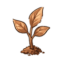
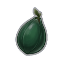
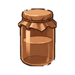

Bakıryaprak
T1Bitki bilgisinde tohumdan yetişir. Simyada Bakır Yumuşatıcı Çözeltisi olur.
- Toplayan meslek
- Bitki bilgisi · Fısıldayan Orman
- Üretildiği meslek
- Bitki bilgisi
- İçinden çıktığı
- Bakır Sandık T1
- Tarif
- Bitki bilgisi Sv 1

Bakır Tohumu T1x1 - Kullanıldığı tarifler

Bakır Yumuşatıcı Çözeltisi